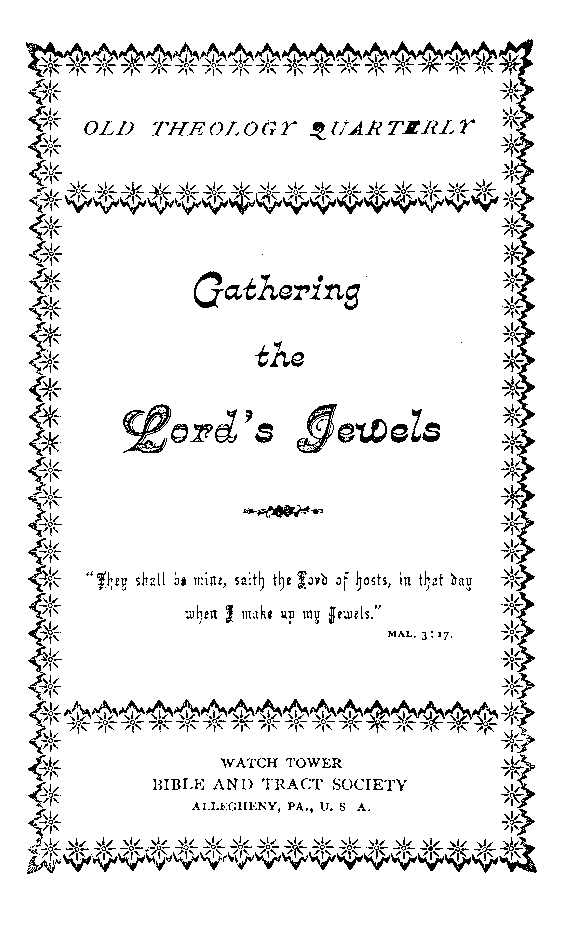

|
OLD THEOLOGY QUARTERLY | |
|
GATHERING THE Lord’s Jewels ---------------. । “ For they shall be mine, saith the Lord of hosts, in that J dav when 1 make up mv jewels?’ j MAL. 3 : 17. | |
|
WATOH TOWBK. BIBLE AND TRACT SOCIETY A llegtieny, Pa., U. 8. -A.. |
No. 44.—January, 1899. .
hntbred as second class mail matter at the POSTOFFICB, • ALLEGHENY, PA.
SAMPLE TRACTS FREE I SUBSCRIPTION PRICE, SIX CENTS (3d) PER YEAR.
48 PAGES.
0L2D THEQhQGY quarterly
—’— FOR THE ----*
PROMOTION OF GiiRISTIfIN KNOWLEDGE.
PUBI/ISHKD BY THE
WftTGH TOWER BIBLE AND TKRGT SOCIETY
BIBLE SOUSE, ALLEGHENY, FA., U9 S. 3.
BRITISH BRANCH, I3I GREEN ST., FOREST GATE, LONDON B., ENGLAND.
NO. 7. THE WONDERFUL STORY, 32 pp« .
NO. 13, WHY EVIL WAS PERMITTED.
NO. 21. DO YOU KNOW ?
NO. 37. HOW RBADEST THOU ?
NO. 38. HOPE OF IMMORTALITY.
NO. 40. WHAT IS THE SOUL ?
NO. 41. MUST WE ABANDON HOPE OF A GOLDEN AGE ?
NO. 42. CROSSES TRUE AND FALSE.
NO. 44. GATHERING THE LORD’S JEWELS.
NO. 49. WHICH IS THE TRUE GOSPEL ?
NO. 52. OUR LORD’S RETURN.
NO. 53. THE WAGES OF SIN.
NO. 54. A DARK CLOUD AND ITS SILVER. LINING. .
NO. 57. CALAMITIES—WHY GOD PERMITS THEM,
NO. 58. THE SCRIPTURE TEACHING ABOUT PURGATORY.
NO. 59. THE WORLD’S HOPE.
NO. 60. WELCOME BACK THE KING,
NO. 6l. PROTESTANTS AWAKE! _
Nos. 21, 28, 40 and 53 can be had in Swedish.
Nos. 21, 27 and 53 can be had in Dano-Norwegian.
Nos. 3, 12, 21, 22, 28, 38, 40, 49 and 53 can be had inGerman.
Nos. 21 and 22 can be had in French.
Extra copies of the above tracts’will be supplied free, on application, to subscribers ; or a single sample to any one. Thus many may be coworkers with us and with God in scattering the truth—“the hail.”—Isa. 28 ; 17. Hundreds of thousands are being circulated thus, the funds being supplied by voluntary contributions from those whose hearts and heads have been refreshed by these “glad tidings, of great joy which shall be unto all the people.”
' ' BOOKLETS
THE WONDERFUL STORY, "THE OLD, OLD STORY.” Illustrated.—60 pp.
WHAT SAY THE SCRIPTURES ABOUT HELL?”—88 pages. Also in German.
WHAT SAY THE SCRIPTURES ABOUT SPIRITISM ?—128 pages. Also in German.
TABERNACLE SHADOWS OF BETTER SACRIFICES. Ill.—130 pages. Also in German.
Extra. Copies of the above booklets are supplied to subscribers at 10c (sd.) each, or 50c (2s. 6d.) per dozen; those below at 5c (2%d.) each, 2gc (is. 3d.) per dozen.
THE BIBLE VS. THE EVOLUTION THEORY. 48 pagee. Also in Sennan.
THE PAROUSIA OF OUR LORD. 78 pages. Also in Swedish.
EPISTLE TO THE HEBREWS* Illwstratod.—64 pages. In Yiddish, only.
German Watch Tower & Old Theology Qnarterlij—Translations^
We can supply copies ®f the first 19 issues at the rate of 19 for 25 cents. Sample copies for free circulation, gratis, postpaid.
“They shall be mine, saith the Lord of hosts, in that day when I make up my Jewels.”—Mal 3 17.
JEWELS have a value of their own, an intrinsic quality, and no doubt would be appreciated if they were very plentiful, but their appreciation is all the more marked because of their comparative scarcity. The figures and similes used throughout the Scriptures by the Holy Spirit are full of significance, and this one as well as others. When the Lord likens his faithful people to the precious stones,' jewels, it signifies that there is an intrinsic value or beauty that he appreciates, and it implies also that such characters are, in comparison to the world, very scarce—a “little flock.”
Our text points to the close or the Gospel age, and not only tells us that the Lord will not gather his jewels sooner, but implies also that the only class to be gathered at that time will be the jewel class—he comes to make up his jewels. "We have here a contradiction of the ordinary thoughts on this subject: (i) That the Lord has been gathering his jewels all along for the past six thousand years: evidently an erroneous thought, since he has appointed a day, in the end of this age, in which he will gather, or make up, his jewels. (2) It exposes the fallacy of the thought that everybody who is respectable, halfway decent, is to be gathered to the Lord, and share in his Kingdom; for it distinctly points out that a very exceptional class only will be sought for and gathered.
The class here described as jewels are contrasted with other classes in the context (vs. 15), “the proud,” who have much of the success of the present time, and workers of wickedness, who tempt God, and are not careful to please and serve him— and such evidently are the majority of mankind. The jewel class is described in vs. 16 as “They that feared Jehovah”—that reverenced him, “and that thought upon his Word.”
But we inquire, where are jewels usually found? The answer of the figure is that jewels may be found m very unexpected places, as for instance the diamonds of South Africa are sometimes mingled with the ordinary gravel, and sometimes embedded in a bluish black clay. They all require to be searched after, and generally require to be washed from the mire, before being prepared to refract the light. So some of these “jewels,” whom the Lord is now seeking out from the world, are found in the ordinary walks of life, and some came from deep down in the mire of sin. The Lord does not expect to find in the world of mankind the jewels which he seeks in perfect or<4pr, shaped, cut, polished and ready for the setting in glory. On the contrary, by one class of his servants he lifts them out of the mire of sin and out of the horrible pit, and washes them, cleanses them from sin through the merit of his own precious blood, and through his Word: and then through other servants and providences he polishes them with divine skill, to the intent that they may reflect and refract the light of the glory of God—the divine character,—justice, wisdom, love.
As the diamond in its rough state, uncut, unpolished, would have no more value than any other common stone for ordinary purposes, so those whom the Lord is selecting and preparing as his jewels are to derive their ultimate value from the cutting, shaping, polishing, of their characters under divine providence: as it is written-“We are his workmanship.” (Eph. 2:10.) W'e cannot suppose the illustration to be perfect m every particular, yet we may readily see that, while divine grace is to be credited with the entire outcome, the beauty and grace of the finished jewel, yet nevertheless divine grace operates according to principles and conditions, under divine law. As the experienced diamond miners reject the soft clay and various of the hard stones, in seeking for those of the desirable kind, so the great Jewel-Gatherer operates according to a principle in seeking for his jewels.
“even as many as the lord shall call.”
The hardness of the diamond may be used to represent character, and we arc to remember that character belongs to the individual and not to God. Each of us must have his own character, and only in proportion as each has character can he hope to be accepted finally as a jewel, for those without character will not endure the tests. As the diamond-seeker lays hold upon everything in his path that gives evidence of having the diamond quality, so divine grace, operating in the diamond field of the world (Christendom, and wherever the Word of the Lord has gone), lays hold upon all who have anything resembling character. The soft, the pliable, the uncrystallized, are not being sought now, and coming in contact with divine grace are passed by. Only such as give evidence of character are thought even worthy of washing and testing.
The hard crystallization of the diamond corresponds to willingness toward righteousness in the individual; and unless there be such willingness toward God and righteousness there is none of the jewel quality which the Lord is now seeking. Those whose wills are formed, crystallized, set, determined, for righteousness, are they -whom the Lord is now seeking. And here we have the imperfection of the simile; for, while all diamonds are alike hard, the great Jewel-Seeker accepts some in whom the crystallizing process is incomplete, and “helps our infirmities,” developing in us by his providences the quality of firmness for righteousness, at the same time that he polishes us.—Rom. 8:26.
But even when the rough diamond has been found, as before observed, it would be of no value, except as it could be cut—indeed, of less value than other stones and clay for many purposes. So it is with those whom divine grace finds in the mire of sin, as having, nevertheless, will or character desiring righteousness, truth, goodness, justice,—“feeling after God” (Acts 17:27): the great - Jewel-Cutter, the great Lapidarist, must really give them all their value, by his wisdom and skill in shaping, cutting and polishing them. Yet, on the other hand, he could not cut, shape or polish that which had not the quality or character, the will for righteousness, essential to the receiving of such a polishing. Those, therefore, who are in the hands of the great Lapidarist, and undergoing bis polishing process, must first have passed through the previous experience of having been found of divine grace —found of the Lord Jesus; must first have been washed; and must have been accepted as having wills desirous of harmony with the divine mind. Therefore, they may take pleasure in all the trying*experiences and difficulties through which our Lord Jesus causes them to pass, as various parts of the grinding and polishing process, necessary to their completion as Jehovah’s jewels, to be made up with the close of this Gospel age, and to be set in the gold of the divine nature, to reflect the beauties of the divine character forever.
It is in harmony with this thought that the Apostle encourages us to rejoice in tribulation, knowing that it is working out for us patience, experience, hope, brotherly-kindness, love,—the various facets of the jewel essentia! to it in the eyes of him who is shortly to gather his jewels. The Apostle again speaks of even the most trying and difficult experiences of the Christian life as being “light afflictions,” and he speaks of the present life as being, in comparison to the eternal future, but “a. moment,” saying, “Our light affliction, which is but for a moment, worketh for us a far more exceeding and eternal weight of glory.”—Rom. 5 : 3-5; 2 Cor. 4:17.
“abandon us not in temptation. ’
The lapidarist takes firm hold upon the jewel which he has already tested and proved to have the requisite jewel quality, and encasing it in a suitable instrument, he presses it against the friction, a lap-wheel, with just the required amount of pressure to cut away the roughness and unevenness, and to effect the necessary shaping and polishing. The process requires great skill, otherwise at times much of the value of the stone might be lost through misshaping; hence only skilled workmen are employed in this department.
For instance, the celebrated Kohinoor diamond origin-allv weighed nearly 800 karate, but in the hands of a poor cutter was reduced to 280 karats. Yet so much of a diamond’s value depends on skilful cutting, that more than one-half of its size was subsequently sacrificed in recutting it, to obtain symmetry, beauty, and refractive power, and now it weighs less than 107 karats.
So it is with the polishing of the Lord’s jewels: their value depends much on proper cutting; and this is entrusted only to the skilled hands of our Lord Jesus Christ, of whom we are assured in advance that he was tempted in all points like as we are—that he himself passed through similar experiences of testings, etc., at the Father’s hands. He knows just what we need to perfect us, so that we will be pleasing and acceptable to the Father, to reflect and refract the light of his glory when it shall fall upon us in our finished state. A part of our lesson.is to have jaith in this great Master-Workman whom the Father has appointed to shape and polish us. We may require much more trimming on some sides of our characters than on others; and the disposition often is to “draw back,” to be not fully submissive, to fear that the.Lord has forgotten and abandoned us in trial. But infinite wisdom assures us, guarantees us, that this is not so and that to draw back would leave us “unfit for the Kingdom.”—Heb. 13:5, Luke 9:62.
The earthly lapidary imbeds the jewel he is polishing in cement, except the facet which he is grinding, so that neither he nor any other sees it during the operation, except as he lifts it, cools it and examines the progress of his work; but all the while he knows just what is being done, for he has an instrument called a “Lapidary’s Dial,” which indicates the position of the jewel exactly^ and avoids the poor cutting of olden times.
And just so it is with the Lord’s jewels: "The world knoweth us not”—-it has seen the wheel of discipline which has been cutting the Lord’s jewels for centuries, but it has not understood the necessity and value of the process. It may even have caught an occasional glimpse of the jewels but not to any advantage—not so as to be able to know the real merit of their characters or the value of the cutting and polishing, for even the already finished facets are smeared with the cement and the slime from the grindwheel. But the great, loving Master-Workman and Lapidarist-in-Chief knows and has explained it all to the “jewels”; and they know in part now, and by faith are trusting all the remainder, singing in their hearts, “He knows, he knows!” “He will not suffer us to be tempted above that vre are able to bear, but will with the** temptation provide also a way of escape.” Yes, the Lord knows just how much pressure to apply,—just how much friction is necessary—and will not willingly afflict us, or cause tribulation which he cannot and will not overrule for our good. And being thus assured that all things are working together for good to them that love God, his living jewels can “rejoice in tribulation,” knowing that it is working out in them the peaceable fruits of righteousness—of love, and that such experiences are essential, and that 'without them they could never be amongst the gathered jewels.
“what son is he that the father chasteneth not?”
Our text, after speaking of the gathering of the jewel class, drops the figure and refers to the same class as God’s sons, saying, “And I will spare them, as a man spareth his own son that serveth him.” Here we have the distinction always held out, as between those who are servants merely, and those who are serving sons. Moses was faithful as a servant over his house (natural Israel), but Christ is faithful as a Son over his house (the elect Church)—the house or family of sons, who have ■received the spirit of adoption, the holy spirit. Although sons, yet they must learn obedience no less thoroughly than if they were merely servants. Indeed, as sons, it is all the more necessary that they learn the lessons of obedience to the Father; more, much more, is to be expected of a son in his father’s service, than of one who is not a son. He is expected to engage in the service in the spirit of his Father, moved by the same impulses of justice and love, because “begotten again9' by that spirit of holiness. As a son he requires not less careful, but more careful, training than a servant: more careful disciplining at the Father’s hands; for is he not his representative and to be his heir?—Heb. 3 6; 12: 7; Rom 8:15,17c
While these sons are not to be spared from the polishing processes necessary to make them acceptable as sons,—“accepted in the Beloved” — nevertheless they are to be spared from something, cur text assures us. Other Scriptures show us that this class is to be spared, (i) from the great time of tribulation which is to come upon the whole world of mankind in the end of this age: in harmony with our Lord’s words, “Watch ye, that ye may be accounted worthy to escape all these things that shall come to pass, and to stand before the Son of Man.” • (2) They are to escape the thousand years of judgment, or trial, coming upon the world, which has its beginning in the time of trouble of “the time of the end.” Thus the Apostle declares that this class of faithful sons, the jewel class, “shall not come into condemnation [judgment] with the world.”—Luke 21:3d; 1 Cor. 11:32; John 5:24.
Nor does this imply that the world’s trial, or judgment, will be an unendurable one; for, quite to the contrary, we are assured that it will be most favorable, that the Lord “will judge the world in righteousness” during the Millennial age. But for the church to have share in that trial would mean a prolongation of the period of trial; it would mean also a thousand years of delay of entering into the joys of the Lord in the fullest sense,—a thousand years of delay in attaining to that which is perfect. And not only so, but, as we have seen from other Scriptures, and as is implied in this Scripture, the class now being selected is a jewel class, differing in many respects from the world of mankind in general, all of whom have been redeemed, and for all of whom a way of escape will be provided, from the inherited Adamic sin and penalty, “in due time.”—1 Tim. 2:6.
“afterward it yieldeth the peaceable fruits of RIGHTEOUSNESS.”
"Nor are we to suppose that those who are now pressed against the wheel of tribulation, difficulty, are thereby made miserable. Quite to the contrary, they realize, as the Scriptures point out they should, a joy and peace which the world knows not of,-—-which the world can neither give nor take away. And when it is remembered that their severe experiences and polishings are “but for a moment,” as compared with the longer disciplines of those who will be dealt with in the Millennial age,—when it is remembered also that in proportion to their trials and difficulties they are granted the “more grace,” and additionally that the reward shall be exceedingly, abundantly more than they could ask or think, according to the exceeding great and precious promises of the divine Word,—then we can see that this house of sons, these “jewels” now being prepared by the Lord, are truly highly favored above all men, and may well take the spoiling of their goods (worldly reputation, etc., included) joyfully: knowing that these things are but working out their “far more exceeding and eternal weight of glory.’ 2 Cor. 4:17.
In speaking of us as sons of God, the Scriptures declare that we are in the school of Christ (the same thought as the cutting of the jewels): and of those who will ultimately be accepted as sons, they show that they will be such as finish their course with joy,—such as will have complied with the predestinated conditions; viz., that all who will be of that son class (the jewels) must be copies of God’s dear Son, who himself is the greatest, most brilliant and absolutely perfect one.—Rom. 8:29, 30.
The process of seeking the house of sons, the jewels, and polishing them, has already been in progress for over eighteen centuries; and the Scriptures indicate to us that now the end of the age is upon us, the time for making up or gathering these jewels, and setting them in the glory of the divine nature, preparatory to the new age in which they shall be exalted as the light of the world. The signs of the times clearly indicate, in harmony with this, that the great time of trouble for the world is nigh, even at the door, to prepare the world for the coming blessings. Hence we see that if we are to be amongst the acceptable ■jewels, amongst the sons who shall be spared from the calamities approaching, we have need to give diligence, and to co-operate with the great Master-Workman, that the shaping and polishing of our hearts, our wills, may be perfected quickly, and that we may be ready to share a glorious part, when he comes to make up his jewels, his loved and his own.
“THEN SHALL YE . . . DISCERN BETWEEN THE RIGHTEOUS AND THE WICKED.”
The Lord, through the prophet, indicates that as soon as the jewels shall have been gathered there will be a general change in his dealings with the w’orld of mankind. Verse 15 shows how it is at the present time, while the polishing of the Lord’s jewels progresses: the unfaithful and the worldly frequently seem to have the advantage; but vs. 18 points out that after this polishing of the jewels is completed, and they have been set in the great crown of rejoicing at the end of this age, “Then shall ye return, and discern between the righteous and the wicked, between him that serveth God and him that serveth him not.” .
Now while evil predominates, while “the prince of this world” (John 14 : 30) reigns unbound, and while “they that tempt God are even delivered, ” it would be difficult, by outward evidences, to judge of who are the Lord’s favored ones. Indeed, his favored ones, his “jewels,” seem to be less favored and to have more afflictions, more trials, more persecutions, more difficulties, a narrower way, than others. And amongst them, consequently, are not found many great or rich or wise, but chiefly the poor of this world, rich in faith, and prospectively heirs of the Kingdom (Jas. 2:5). But when these shall be glorified with their Lord in the Kingdom—then there shall be a general change, a turning round. No longer will the wicked and those who tempt God be found in power and in influence and in prosperity, and the humble, the meek, the godly, suffer persecution and tribulation: but contrariwise, of that time, when Christ’s Millennial reign shall be inaugurated, it is declared prophetically, “In his day the righteous shall flourish,” and the “evildoer shall be cut off”—Satan shall be bound also.—Psa. 72:7; 37:9; Rev. 20:2.
“THEY . . . SPAKE OFTEN ONE TO .ANOTHER.”
But glancing back at the context we see another suggestion respecting the disposition of this “jewel” class during their time of polishing. We read, “They that feared [reverenced] the Lord spake often one to another” (vs. 16). Ah yes! What could be more natural than a desire for communion with all who are of “like precious faith,” all who are similarly in the hands of the Lapidar-ist, undergoing polishing, ail who are of the same character, disposition, as respects God and his righteousness ? Our Lord points out that “love of the brethren” will be a marked quality in all his servant-sons, for he that loveth him that begat loveth also him that is begotten of God. (i John 5:1.) And the tendency of the mutual love of the “brethren” is to meet frequently and (personally or through the printed or written page) to speak to each other. The Apostle Paul distinctly calls to our attention the propriety, yea, the necessity, for this class meeting together. He exhorts, “Forget not the assembling of yourselves together, . . . and so much the more as ye see the day [the day of gathering of the “jewels”] drawing nigh.” It is to the same end that our Lord has made some of his promises to his people collectively, saying, “When two or three of ycu are met in my name, there am I in the midst.”—Matt. 18:20; Heb. 10:25.
There is a thought also in the word “together”; the sons of God are not merely anxious for a meeting in which the world, the flesh and the devil will commingle—they are anxious specially for fellowship with each other, with those who have similar characters, similar faith in the precious blood, similar consecration, and who are similarly passing through the hands of the great Polisher, to be prepared for association in glory. This desire for fellowship with one another is not selfishness, nor an impropriety; on. the contrary, our Lord declares that those who love the light come to the light, while those who lovo,darkness shun the light, and the Apostle inquires, a What communion hath light with’darkness?” and he points out distinctly that while Satan and the children of darkness may simulate the table of the Lord and the grace of his truth, yet there is no real harmony or fellowship between their table and the Lord’s table, upon which he sets forth the precious truth for his beloved.
When we read that these faithful "sp.'.ke together,” we naturally inquire respecting the topic of their converse, the subject upon which they communicate. It is not stated here, but is clearly stated els where in t e inspired Word. The Apostle points out that s h "mi d heavenly things,” and contrasts them with other: of th earth, earthly, who "mind earthly thi- gs,” and who e g d is their belly. Their convert , therefo- , will not be respecting earthly pleasure , food and raiment, the ambitions of the natural mind, th pri<' of lif , etc., but will be respecting "the thii.gs v.hi h b: n unto their peace,” the things whi h are pp rmost L. th u* hearts: for these are all seeking first the Kingdom f Leaven and its righteousness, and in earthl matte are "content with such things as they have, as the Lord’s providence shall arrange for them.
THE NEW SONG IN THEIR MOUTH. _
Neither do they come together to lament the trials and difficulties by the way, although there may be someocca-sions when the majority may "weep with those that weep.” Usually, however, the proper condition is that in which each should live so in the light of the Father’s countenance that-the trials and difficulties of the present life, which would be terrible and burdensome to the world unsustained by divine grace, will be to these but “light afflictions;” and as children of the heavenly King, instead of going mourning all their days, they will rejoice—rejoice in the tribulation and adversity, as well as in prosperity. Accordingly, as the sentiment of this class, it is written, —-"He hath put a new song into my mouth, even the loving kindness of our God.” •
It is quite in harmony with this that the Apostle prays for some, that they may be enabled to "comprehend with all saints the length and the breadth, the height and the depth of the love of God which passeth all understanding.” Those who have received this "new song,” and have comprehended its meaning, with the saints in general, will have, in this love of God, and in the wide and deep, high and glorious plan of God for the salvation, first of the elect Church, and subsequently of the world of mankind—“whosoever will”—an abundant theme, a never-ending theme, a theme above all others, which will fill their hearts and fill their minds. It wift crowd out worldly topics, as being not worthy to be compared. It will crowd out complainings and murmurings, as being wholly improper on the part of those who have been recipients of so many divine favors, and “much advantage every way,” in that we have delivered unto us the divine oracles,—and especially in view of our adoption into the family of G-od as sons and “joint-heirs with Jesus Christ our Lord, if so be that we suffer with him, that we may be also glorified together.”—Rom. 8:17.
“him that is weak in the faith receive.”
While it would be wholly improper for the consecrated ones to thrust out others who desire to meet with them, or to attempt to judge the hearts of those who profess faith in the ransom and full consecration to the Lord, yet to the extent that those who have received the holy spirit of adoption let their light shine out properly, and seek to “edify one another,” and to “build one another up in the most holy faith,” in that proportion the insincere, the unconsecrated and the hypocritical, will find less and less to attract them. And in consequence “those who fear the Lord and who think upon his Word” find all the more of blessed spiritual communion and edification.
The class of whom the Apostle says that they are sensual, earthly, having not the spirit of the Lord, make disturbance ’when they come amongst the true sons of God, and do injury, because with them as with others it is true, as it is written, “Out of the abundance of the heart the mouth speaketh,” and their hearts, filled with pride, selfishness, vain-glory and ambition, overflow through their mouths; and communication with such is unprofitable. From such evil hearts come evil words of envy, slander, hatred, malice, strife, selfish suggestions contrary to the word and spirit of the Lord. Such edify no one; their influence is always pernicious; they build not up in the most holy faith, but, on the contrary, tend to develop and to cultivate roots of bitterness, whereby often “many are defiled.”—Heb. 12:15.
Those who fear the Lord, who reverence his name, who think upon his word, who are seeking to copy his disposition, and to be fashioned under the hand of divine providence, should see to it that the class we have described, of whom the Apostle declares that their envy, malice, hatred, strifes, etc., are works of the devil, do not get opportunities to work their evil works. They should do this, first, by showing their disapproval of all evil speaking and evil works: and those who cannot show their disapproval by words of kindly admonition, pointing out that such things are not from God, but from the Adversary, should at least manifest their disapproval in their withholding any look of sympathy with such a course and by breaking off the conversation, and very generally avoiding the company of such; and by the more strict attention to their own words and conduct, that therein they may “show forth the praises of him who hath called us out of darkness into his marvelous light.”
“and the lord hearkened and heard.”
Another thought in this connection, that we should not overlook, is that brought to our attention in the words, “And the-Lord hearkened and heard it.” How often would the sons of God be greatly blessed as they meet together to talk over the divine plan, the divine goodness, wisdom, love, justice, and to help one another, and to encourage one another with psalms, hymns, spiritual songs, and by refreshing one another’s minds with the exceeding great and precious promises which belong to them that reverence the Lord,—how much would such be blessed, if they could always have in memory this statement, 'that the Lord is hearkening, is listening to our conversation when we speak together. He listens to see who, out of good hearts, speak forth those things which are loving, gentle, pure, good, true, as distinguished from those who are careless of the truth, and whose words are vain or frivolous, or worse than thist slanderous, enmitous and selfish.
Let all the Sons of God remember the importance of honesty, ''‘truth in the inward parts,” when they come together as members of the body of Christ, to study the divine Word, and to help one another, and ‘‘let nothing be done through strife or vain glory, but let each esteem the other greater in saintliness than himself,—seeking to see in each other, so far as possible, the good, the noble, the true: and let each seek to watch his own heart, and to know of his own blemishes. Thus let personal humility and love of the brethren keep pace with our growth in knowledge of divine things; otherwise let us be assured that we are in the sifting and separating time, and that all who have not this spirit of humility, patience, gentleness, brotherly-kindness, love, will surely be separated.—• r John 2:19^
Some will not be amongst those who are gathered as jewels, because the jewels which the Lord will gather will be pure, “first-water” diamonds—stainless. They are to be faultless in love before the Father; and perfect love. not only casts out fear, but casts out also selfishness, animosity, evil surmises and evil-speakings, as well as self-love, pride. Oh how beautiful will be the Lord’s Jewels! How full of meaning is the statement that our Lord Jesus, the great Jewel, polished by the divine hand, and after whose likeness we are to be polished, “shall come to be glorified in his saints, and to be admired [Head and body] of all them that believe in that day,” by all those who, during the Millennial Day, come into harmony with God, through Christ, under the terms of the New Covenant sealed by the precious blood.—2 Thes. 1 :io.
Write to us for sample copies of Tracts Nos. 37 and 41. The latter exhibits citations from “all the holy prophets since the world began” which indicate that there will be in the Millennial Day a glorious opportunity for salvation open to those who have not had an opportunity -in the present life.
WATCH TOWER BIBLE & TRACT SOCIETY
‘•BIBJJE HOUSE,” ALLEGHENY, PA., U. S. A.
BRITISH BRANCH: 131 GREEN ST., FOREST GATE, LONDON, E.
No. 44-—January, 1899.
ENTERED AS SECOND CLASS MAIL MATTER AT THB POSTOFFICB, ALLEGHENY, PA.
SAMPLE TRACTS FREE I SUBSCRIPTION PRICE, SIX CENTS (3d.) PER YEAR—48 PAGES
— FOR THE —
PROMOTION OF CHRISTIAN KNOWLEDGE.
PUBLISHED BY THE
BIBLE HOUSE, ALLEGHENY, PA., U. S. A.
BRITISH BRANCH, 131 GIPSY LANE, FOREST GATE, LONDON E., ENGLAND
NO. 3. PROTESTANTS, AWAKE I
NO. 7. THE WONDERFUL STORY, 32 pp.
NO. 12. WHY EVIL WAS PERMITTED.
NO. 21. DO YOU KNOW?
NO. 37. HOW RBADEST THOU ?
NO. 38. HOPE OF IMMORTALITY.
NO. 40. WHAT IS THE SOUL ?
NO. 41. MUST WE ABANDON HOPE OF A GOLDEN AGE?
NO. 42. CROSSES TRUE AND FALSE.
NO. 44. GATHERING THE LORD’S JEWELS.
NO. 49. WHICH IS THE TRUE GOSPEL?
NO. 52. OUR LORD’S RETURN.
NO. 53. THE WAGES OF SIN.
NO. 54. A DARK CLOUD AND ITS SILVER LINING.
NO. 57. CALAMITIES—WHY GOD PERMITS THEM.
Nos. 21, 28, 40 and 53 can be had in Swedish.
Nos. 21, 27 and 53 can be had in Dano-Norwegian.
Nos. 3, 12, 21, 22, 28, 38, 40, 49 and 53 can be had in German.
Nos. 21 and 22 can be had in French
Extra copies of the above tracts will be supplied free, on application, to subscribers; or a single sample to any one Thus many may be coworkers with us and with Godin scattering the truth—“the hail.”—Isa. 28 : 17 Hundreds of thousands are being circulated thus, the funds being supplied by voluntary contributions from those whose hearts and heads have been refreshed by these “glad tidings of great joy which shall be unto all people.”
BOOKLETS
the wonderful story, “the old, old story.” Illustrated.—60 pp.
what say the scriptures about hell?—88 pages. Also in German.
what say thb scriptures about spiritism?—128 pages. Also in German. tabernacle shadows of better sacrifices. Ill.—130 pp. Also in German.
Extra Copies of the above booklets are supplied to subscribers at roc ($d.) each, or 50c (2/6) per dozen: those below at 5c (2^-d.) each, 25c (z/j) per dozen.
the bible vs. the evolution theory. 48 pp. Also in German.
the parousia of our lord. 78 pp. Also in Swedish.
epistle to the Hebrews. Illustrated.—64 pp. In Yiddish, only.
German Watch Tower & Old Theology Quarterly—Translations.
— quarterly for one year, 25 CENTS. —
We can supply copies of the first 19 issues at the rate of 19 copies for 25 cents. Sample copies for free circulation, gratis, postpaid.
“ They shall be mine, saith the Lord of hosts, in that day when I make up my Jewels.”—Mal. 3:17.
E W E L S have a value of their own, an intrinsic quality, and no doubt would be appreciated, if they were very plentiful, but their appreciation is all the more marked because of their comparative scarcity. The figures and similes used throughout the Scriptures by the holy spirit are full of significance, and this one as well as others. When the Lord likens his faithful people to the precious stones, jewels, it signifies that there is an intrinsic value or beauty that he appreciates, and it implies also that such characters are in comparison to the world very scarce—a “ little flock.”
Our text points to the close of the Gospel age, and not only tells us that the Lord will not gather his jewels sooner, but implies also that the only class to be gathered at that time will be the jewel class—he comes to make up his jewels. Wc- hav' here a contradiction of the ordinary thoughts on this subject: (1) That the Lord has been gathering his jewels all along for the past six thousand years: evidently an erroneous thought, since he has appointed a day, in the end of this age, in which he will gather or make up his jewels. (2) It exposes the fallacy of the thought that everybody who is respectable, half-way decent, is to be gathered to the Lord, and share in his Kingdom, for it distinctly points out that a very exceptional class only will be sought for and gathered.
The class here described as jewels are contrasted with other classes in the context (vs. 15), “the proud,” who have much of the success of the present time, and workers of wickedness, who tempt God, and are not careful to
please and serve him—and such evidently are the majority of mankind. The jewel class is described in vs. 16 as (‘ They that feared Jehovah”-—that reverenced him, “and that thought upon his Word.”
But we inquire, where are jewels usually found ? The answer of the figure is that jewels may be found in very unexpected places, as for instance the diamonds of South Africa are sometimes mingled with the ordinary gravel, and sometimes embedded in a bluish black clay. They all require to be searched after, and generally require to be washed from the mire, before being prepared to refraCt the light. So some of these “jewels,” whom the Lord is now seeking out from the world, are found in the ordinary walks of life, and some came from deep down in the mire of sin. The Lord does not expeCt to find in the world of mankind the jewels which he seeks in perfect order, shaped, cut, polished and ready for the setting in glory. On the contrary, by one class of his servants he lifts them out of the mire of sin and out of the horrible pit, and washes them, cleanses them from sin through the merit of his own precious blood, and through his Word: and then through other servants and providences he polishes them with divine skill, to the intent that they may refleCt and refraCt the light of the glory of God—the divine character,—■ justice, wisdom, love.
As the diamond in its rough state, uncut, unpolished, would have no more value than any other common stone for ordinary purposes, so those whom the Lord is selecting and preparing as his jewels are to derive their ultimate value from the cutting, shaping, polishing, of their characters under divine providence: as it is written: “We are his workmanship.” (Eph. 2:10.) We cannot suppose the illustration to be perfeCt in every particular, yet we may readily see that, while divine grace is to be credited with the entire outcome, the beauty and grace of the finished jewel, yet nevertheless divine grace operates according to principles and conditions, under divine law. As the experienced diamond miners rejeCt the soft clay and various of the hard stones, in seeking for those of the desirable kind, so the great Jewel-Gatherer operate0 according to a principle in seeking for his jewels.
“EVEN AS MANY AS THE LORD SHALL CALL.”
The hardness of the diamond may be used to represent character, and we are to remember that character belongs to the individual and not to God. Each of us must have his own character, and only in proportion as each has charadter can he hope to be accepted finally as a jewel, for those without charadter will not endure the tests. As the diamond-seeker lays hold upon everything in his path that gives evidence of having the diamond quality, so divine grace, operating in the diamond field of the world (Christendom, and wherever the Word of the Lord has gone), lays hold upon all who have anything resembling character. The soft, the pliable, the uncrystallized, are not being sought now, and coming in contadt with divine grace are passed by. Only such as give evidence of charadter are thought even worthy of washing and testing.
The hard crystallization of the diamond corresponds to willingness toward righteousness in the individual; and unless there be such willingness toward God and righteousness there is none of the jewel quality which the Lord is now seeking. Those whose wills are formed, crystallized, set, determined, for righteousness, are they whom the Lord is now seeking. And here we have the imperfedtion of the simile; for, while all diamonds are alike hard, the great JewelSeeker accepts some in whom the crystallizing process is incomplete, and “helps our infirmities,” developing in us by his providences the quality of firmness for righteousness, at the same time that he polishes us.-—Rom. 8:26.
But even when the rough diamond has been found, as before observed, it would be of no value, except as it could be cut—indeed, of less value than other stones and clay for many purposes. So it is with those whom divine grace finds in the mire of sin, as having, nevertheless, will or charadter desiring righteousness, truth, goodness, justice,— “feeling after God” (Adtsryray): the great Jewel-Cutter, the great Lapidarist, must really give them all their value, by his wisdom and skill in shaping, cutting and polishing them. Yet, on the other hand, he could not cut, shape or polish that which had not the quality or character, the will for righteousness, essential to the receiving of such a polishing. Those, therefore, who are in the hands of the great Lapidarist, and undergoing his polishing process, must first have passed through the previous experience of having been found of divine grace—found of the Lord Jesus; must first have been washed; and must have been accepted as having wills desirous of harmony with the divine mind. Therefore, they may take pleasure in all the trying experiences and difficulties through which our Lord Jesus causes them to pass, as various parts of the grinding and polishing process, necessary to their completion as Jehovah’s jewels, to be made up with the close of this Gospel age, and to be set in the gold of the divine nature, to reflect the beauties of the divine character forever.
It is in harmony with this thought that the Apostle encourages us to rejoice in tribulation, knowing that it is working out for us patience, experience, hope, brotherly-kindness, love,—the various facets of the jewel essential to it in the eyes of him who is shortly to gather his jewels. The Apostle again speaks of even the most trying and difficult experiences of the Christian life as being “ light afflictions,” and he speaks of the present life as being, in comparison to the eternal future, but “amoment,” saying, “Our light affliction, which is but for a moment, worketh for us a far more exceeding and eternal weight of glory.” —Rom. 5:3-5; 2 Cor. 4:17.
“abandon us not in temptation.”
The lapidarist takes firm hold upon the jewel which he has already tested, and proved to have the requisite jewel quality, and encasing it in a suitable instrument, he presses it against the friCtion, a lap-wheel, with just the required amount of pressure to cut away the roughness and unevenness, and to effeCt the necessary shaping and polishing. The process requires great skill, otherwise at times much of the value of the stone might be lost through misshaping; hence only skilled workmen are employed in this department.
For instance, the celebrated Kohinoor diamond originally weighed nearly 800 karats, but in the hands of a poor cutter was reduced to 280 karats. Yet so much of a diamond’s value depends on skilful cutting, that more than one-half of its size was subsequently sacrificed in recutting it, to obtain symmetry, beauty, and refractive power, and now it weighs less than 107 karats.
So it is with the polishing of the Lord’s jewels: their value depends much on proper cutting ; and this is entrusted only to the skilled hands of our Lord Jesus Christ, of whom we are assured m advance that he was tempted in all points like as we are—that he himself passed through similar experiences of testings, etc., at the Father’s hands. He knows just what we need to perfect us, so that we will be pleasing and acceptable to the Father, to refleCt and refraCt the light of his glory when it shall fall upon us in our finished state. A part of our lesson is to have faith in this great Master-Workman whom the Father has appointed to shape and polish us. We may require much more trimming on some sides of our characters than on others; and the disposition often is to “draw back,” to be not fully submissive, to fear that the Lord has forgotten and abandoned us in trial. But infinite wisdom assures us, guarantees us, that this is not so and that to draw back would leave us “ unfit for the Kingdom.” —Heb. 13:5; Lake 9:62.
The earthly lapidary imbeds the jewel he is polishing in cement, except the facet which he is grinding, so that neither he nor any other sees it during the operation, except as he li fts it, cools it and examines the progress of his work; but all the while he knows just what is being done, for he has an instrument called a “Lapidary’s Dial,” which indicates the position of the jewel exaCtly, and avoids the poor cutting of olden times.
And just so it is with the Lord’s jewels: “The world knoweth us not”—it has seen the wheel of discipline which has been cutting the Lord’s jewels for centuries, but it has not understood the necessity and value of the process. It may even have caught an occasional glimpse of the jewels but not to any advantage—not so as to be able to know the real merit of their characters or the value of the cutting and polishing, for even the already finished facets are smeared with the cement and the slime from the grindwheel. But the great, loving Master-workman and Lapi-dar :t-in Chief knows and has explained it all to the “jew-uo ;' ’ and tney know in part now, and by faith are trusting all the remainder, singing in their hearts, “ He knows, he knows!” “ He will not suffer us to be tempted above that we are able to bear, but will with the temptation provide also a way of escape.” Yes, the Lord knows just how much pressure to apply,—just how much fridtion is necessary— and will not willingly afflidt us, or cause tribulation which he cannot and will not overrule for our good. And being thus assured that all things are working together for good to them that love God, his living jewels can “ rejoice in tribulation,” knowing that it is working out in them the peaceable fruits of righteousness—of love, and that such experiences are essential, and that without them they could never be amongst the gathered jewels.
“ WHAT SON IS HE THAT THE FATHER CHASTENETH NOT? ”
Our text, after speaking of the gathering of the jewel class, drops the figure and refers to the same class as God’s sons saying, “ And I will spare them, as a man spareth his own son that serveth him.” Here we have the distindiion always held out, as between those who are servants merely, and those who are serving sons. Moses was faithful as a servant over his house (natural Israel), but Christ is faithful as a Son over his house (the eledt Church) — the house or family of sons, who have received the spirit of adoption, the holy spirit. Although sons, yet they must learn obedience no less thoroughly than if they were merely servants. Indeed, as sons, it is all the more necessary that they learn the lessons of obedience to the Father; more, much more, is to be expedted of a son in his father’s service, than of one who is not a son. He is expedted to engage in the service in the spirit of his Father, moved by the same impulses of justice and love, because “ begotten again ” by that spirit of holiness. As a son he requires not less careful but more careful training than a servant: more careful disciplining at the Father’s hands; for is he not his representative and to be his heir? — Heb. 3:5, 6; 12:7; Rom.8:15, 17.
While these sons are not to be spared from the polishing processes necessary to make them acceptable as sons,— “ accepted in the Beloved, ”—nevertheless they are to be spared from something, our text assures us. Other Scrip-tures'show us thart thjs class is to be spared, (1) from the' great time of tribulation which is to come upon the wnole world of mankind in the end of this age; in harmony with our Lord’s words, “Watch ye, that ye may be accounted worthy to escape all these things that shall come to pass, and to stand before the Son of Man.” (2) They are to escape the thousand years of judgment or trial, coming upon the world, which has its beginning in the time of trouble of “ the time of the end.” Thus the Apostle declares that this class of faithful sons, the jewel class, “ shall not come into condemnation [judgment] with the world.”—Luke 21:3b; 1 Cor. 11132; John 5 124.
Nor does this imply that the world’s trial or judgment will be an unendurable one; for, quite to the contrary, we are assured that it will be most favorable, that the Lord “will judge the world in righteousness” during the Millennial age. But for the Church to have share in that trial would mean a, prolongation of the period of trial; it would mean also a thousand years of delay of entering into the joys of the Lord in the fullest sense,—a thousand years of delay in attaining to that which is perfect. And not only so, but, as we have seen from other Scriptures, and as is implied in this Scripture, the class now being selected is a jewel class, differing in many respedts from the world of mankind in general, all of whom have been redeemed, and for all of whom a way of escape will be provided, from the inherited Adamic sin and penalty, “in due time. ”—iTim. 2:6.
“afterward it yieldeth the peaceable fruits of RIGHTEOUSNESS.”
Nor are we to suppose that those who are now pressed against the wheel of tribulation, difficulty, are thereby made miserable. Quite to the contrary, they realize, as the Scriptures point out they should, a joy and peace which the world knows not of,—which the world can neither give nor take away. And when it is remembered that their severe experiences and polishings are “but for a moment,” as compared with the longer disciplines of those who will be dealt with in the Millennial age,—when it is remembered also that in proportion to their trials and difficulties they are granted the “more grace,” and additionally that the reward shall be exceedingly, abundantly more than they could ask or think, according to the exceeding great and precious promises of the divine Word,—then we can see that this house of sons, these “jewels” now being prepared by the Lord, are truly highly favored above all men, and may well take the spoiling of their goods (worldly reputation, etc., included).• knowing that these things are but working out their “ far more exceeding and eternal weight of glory.”—2, Cor. 4:17.
Ill speaking of us as sons of God, the Scriptures declare that we are in the school of Christ (the same thought as the cutting of the jewels) : and of those who will ultimately be accepted as sons, they show that they will be such as finish their course with joy,—such as will have complied with the predestinated conditions; viz., that all who will be of that son class (the jewels) must be copies of God’s dear Son, who himself is the greatest, most brilliant and absolutely perfect one.—Rom. 8:29, 30.
The process of seeking the house of sons, the jewels, and polishing them, has already been in progress for over eighteen centuries; and the Scriptures indicate to us that now the end of the age is upon us, the time for making up or gathering these jewels, and setting them in the glory of the divine nature, preparatory to the new age in which they shall be exalted as the light of the world. The signs of the times clearly indicate, in harmony with this, that the great time of trouble for the world is nigh, even at the door, to prepare the world for the coming blessings. Hence we see that if we are to be amongst the acceptable jewels, amongst the sons who shall be spared from the calamities approaching, we have need to give diligence, and to cooperate with the great Master-Workman, that the shaping and polishing of our hearts, our wills, may be perfected quickly, and that we may be ready to share a glorious part; when he comes to make up his jewels, his loved and his own.
“THEN SHALL YE . . . DISCERN BETWEEN THE RIGHTEOUS AND THE WICKED.”
The Lord, through the prophet, indicates that as soon as the jewels shall have been gathered there will be a general change in his dealings with the world of mankind. Verse <15 shows how it is at the present time, while the polishing of the Lord’s jewels progresses: the unfaithful and the worldly frequently seem to have the advantage; but vs. 18 points out that after this polishing of the jewels is completed, and they have been set in the great crown of rejoicing at the end of this age, “Then shall ye return, and discern between the righteous and the wicked, between him that serveth God and him that serveth him not.”
Now while evil predominates, while “ the prince of this world” (John 14: 30) reignsunbound, and while “they that tempt God are even delivered,” it would be difficult, by outward evidences, to judge of who are the Lord’s favored ones. Indeed, his favored ones, his “jewels,” seem to be less favored and to have more afflictions, more trials, more persecutions, more difficulties, a narrower way, than others. And amongst them, consequently, are not found many great or rich or wise, but chiefly the poor of this world, rich in faith, and prospeCtively heirs of the Kingdom (Jas. 2:5). But when these shall be glorified with their Lord in the Kingdom—then there shall be a general change, a turning round. No longer will the wicked and those who tempt God be found in power and in influence and in prosperity, and the humble, the meek, the godly, suffer persecution and tribulation: but contrariwise, of that time, when Christ’s Millennial reign shall be inaugurated, it is declared prophetically, “In his day the righteous shall flourish,” and the “evildoer shall be cut off” — Satan shall be bound also. — Psa. 72:7; 37:9; Rev. 20:2.
“THEY . . . SPAKE OFTEN ONE TO ANOTHER.”
But glancing back at the context we see another suggestion respecting the disposition of this “jewel” class during their time of polishing. We read, “They that feared [reverenced] the Lord spake often one to another. ’ ’ (vs. 16.) Ah yes! What could be more natural than a desire for communion with all who are of “like precious faith,” all who are similarly in the hands of the Lapidar-ist, undergoing polishing, all who are of the same character, disposition, as respeCts God and his righteousness? Our Lord points out that “ love of the brethren” will be a marked quality in all his servant-sons, for he that loveth him that begat loveth also him that is begotten of God. (x John 5:1.) And the tendency of the mutual love of the “brethren” is to meet frequently and (personally or through the printed or written page) to speak to each other. The Apostle Paul distinctly calls to our attention the propriety, yea, the necessity, for this class meeting together. He exhorts, “Forget not the assembling of yourselves together, . . . and so much the more as ye see the day [the day of gathering of the “jewels”] drawing nigh.” It is to the same end that our Lord has made some of his promises to his people collectively, saying, “ When two or three of you are met in my name, there am I in the midst.”—■ Matt. 18:20; Heb. 10:25.
There is a thought also in the word “together;” the sons of God are not merely anxious for a meeting in which the world, the flesh and the devil will commingle—they are anxious specially for fellowship with each other, with those who have similar characters, similar faith in the precious blood, similar consecration, and who are similarly passing through the hands of the great Polisher, to be prepared for association in glory. This desire for fellowship with one another is not selfishness, nor an impropriety; on the contrary, our Lord declares that those who love the light come to the light, while those who love darkness shun the light, and the Apostle inquires, “What communion hath light with darkness?” and he points out distinctly that while Satan and the children of darkness may simulate the table of the Lord and the grace of his truth, yet there is no real harmony or fellowship between their table and the Lord’s table, upon which he sets forth the precious truth for his loved and his own.—1 Cor. 19:21. See Zion’s Watch Tower for Dec. 1st, ’95, “The Cup of the Lord and the Table of the Lord.”
When we read that these faithful “spake together,” we naturally inquire respecting the topic of their converse, the subjeCt upon which they communicate. It is not stated here, but is clearly stated elsewhere in the inspired Word, TheApostle points out that such1 ‘mind heavenly things, ’ ’and contrasts them with others of the earth, earthly, who “mind earthly things,” and whose god is their belly. Their converse, therefore, will not be respecting earthly pleasures. food and raiment, the ambitions of the natural mind, the pride of life, etc., but will be respecting “ the things which belong unto their peace,” the things which are uppermost in their hearts: for these are all seeking first the Kingdom of heaven and its righteousness, and in earthly matters are “content with such things as they have,”—as the Lord’s providence shall arrange for them.
THE NEW SONG IN THEIR MOUTH.
Neither do they come together to lament the tnais and difficulties by the way, altho there may be some occasions when the majority may “weep with those that weep.” Usually, however, the proper condition is that in which each should live so in the light of the Father’s countenance that the trials and difficulties of the present life, which would be terrible and burdensome to the world, unsustained by divine grace, will be to these but “light afflictions: ’ and as children of the heavenly King, instead of going mourning all their days, they will rejoice—rejoice in tribulation and adversity, as well as in prosperity. Accordingly, as the sentiment of this class, it is written,—“He hath put a new song into my mouth, even the lovingkindness of our God.”
It is quite in harmony with this that the Apostle prays for some, that they may be enabled to “comprehend with all saints the length and the breadth, the height and the depth of the love of God which passeth all understanding.” Those who have received this “new song,” and have comprehended its meaning, with the saints in general, will have, in this love of God, and in the wide and deep, high and glorious plan of God for the salvation, first of the eleCt Church, and subsequently of the world of mankind— “ whosoever will ”—an abundant theme, a never-ending theme, a theme above all others, which will fill their hearts and fill their minds. It will crowd out worldly topics, as being not worthy to be compared. It will crowd out complainings and murmurings, as being wholly improper on the part of those who have been recipients of so many divine favors, and “'much advantage every way,” in that we have delivered unto us the divine oracles,—and especially in view of our adoption into the family of God as sons and “ joint-heirs with Jesus Christ our Lord, if so be that we suffer with him, that we may be also glorified together.”— Rom. 8:17.
“HIM THAT IS WEAK IN THE FAITH RECEIVE.”
While it would be wholly improper for the consecrated ones to thrust out others who desire to meet with them, or to attempt to judge the hearts of those who profess faith in the ransom and full consecration to the Lord, yet to the extent that those who have received the holy spirit of adoption let their light shine out properly, and seek to “ edify one another,” and to “build one another up in the most holy faith,” in that proportion the insincere, the unconsecrated and the hypocritical,will find less and less to attract them. And in consequence “those who fear the Lord and who think upon his Word” find all the more of blessed spiritual communion and edification.
The class of whom the Apostle says that they are sensual, earthly, having not the spirit of the Lord, make disturbance when they come amongst the true sons of God, and do injury, because with them as with others it is true, as it is written, “Out of the abundance of the heart the mouth speaketh,” and their hearts, filled with pride, selfishness, vain-glory and ambition, overflow through their mouths ; and communication with such is unprofitable. From such evil hearts come evil words of envy, slander, hatred, malice, strife, selfish suggestions contrary to the word and spirit of the Lord. Such edify no one; their influence is always pernicious; they build not up in the most holy faith, but, on the contrary, tend to develop and to cultivate roots of bitterness, whereby often “many are defiled.”—Heb.12:15.
Those who fear the Lord, who reverence his name, who think upon his Word, who are seeking to copy his disposition, and to be fashioned under the hand of divine providence, should see to it that the class we have described, of whom the Apostle declares that their envy, malice, hatred, strifes, etc., are works of the devil, do not get opportunities to work their evil works. They should do this, first, by showing their disapproval of all evil speaking and evil works: and those who cannot show their disapproval by words of kindly admonition, pointing out that such things are not from God, but from the Adversary, should at least manifest their disapproval in their withholding any look of sympathy with such a course, and by breaking off the conversation, and very generally avoiding the company of such; and by the more strict attention to their own wordsand conduct, that therein they may “show forth the praises of him who hath called us out ofdarkness into his marvelous light.’’
“AND THE LORD HEARKENED AND HEARD.”
Another thought in this connedtion, that we should not overlook, is that brought to our attention in the words, ‘ ‘And the Lord hearkened and heard it. ’ ’ How often would the sons of God be greatly blessed as they meet together to talk over the divine plan, the divine goodness, wisdom, love, justice, and to help one another, and to encourage one another with psalms, hymns, spiritual songs, and by refreshing one another’s minds with the exceeding great and precious promises which belong to them that reverence the Lord,—how much would such be blessed, if they could always have in memory this statement, that the Lord is hearkening, is listening to our conversation when we speak together. He listens to see who, out of good hearts, speak forth those things which are loving, gentle, pure, good, true, as distinguished from those who are careless of the truth, and whose words are vain or frivolous, or worse than this, slanderous, enmitous and selfish.
And even amongst those who are on the Lord’s side, amongst those who are showing forth his praises, endeavoring to build one another up in the most holy faith, and in the fruits and graces of the spirit,—we may be sure that our Lord hearkens to such teachers and helpers, and takes knowledge of the purity of their motives as well as of their words; he takes knowledge of whether they are seeking to glorify themselves, or to glorify him in their use of such privileges and opportunities. If their words are boastful, it would indicate pride in the heart, a flaw in the “jewel,” which would make it unworthy to be amongst those to be “gathered.” If vain gloriously any attempts to take to himself the honor which belongs to the Lord, he is showing himself disloyal to his Master, Christ. Such would thus prove that he had not the spirit of the Master, who
humbled himself, and who gave all glory and honor to the Father, in respedl to every feature of the great salvation.
Let all the Sons of God remember the importance of honesty, ‘‘truth in the inward parts,” when they come together as members of the body of Christ, to study the divine Word, and to help one another, and “let nothing be done through strife or vain glory, ’ ’ but let each esteem the other greater in saintliness than himself,—seeking to see in each other, so far as possible, the good, the noble, the true: and let each seek to watch his own heart, and to know of his own blemishes. Thus let personal humility and love of the brethren keep pace with our growth in knowledge of divine things; otherwise let us be assured that we are in the sifting and separating time, and that all who have not this spirit of humility, patience, gentleness, brotherly-kindness, love, will surely be separated.—i John 2:19.
Some will not be amongst those who are gathered as jewels, because the jewels which the Lord will gather will be pure, “first-water” diamonds—stainless. They are to be faultless in love before the Father; and perfect love not only casts out fear, but casts out also selfishness, animosity, evil surmises and evil-speakings, as well as self-love, pride. O how beautiful will be the Lord’s Jewels! How full of meaning is the statement that our Lord Jesus, the great Jewel, polished by the divine hand, and after whose likeness we are to be polished, “shall come to be glorified in nis saints, and to be admired [head and body] of all them that believe in that day,” by all those who, during the Millennial Day, come into harmony with God, through Christ, under the terms of the New Covenant sealed by the precious blood.—2 Thes. 1:10.
Write to us for sample copies of Tracts Nos. 37 and 41. The latter exhibits citations from “all the holy prophets since the world began” which indicate that there will be in the Millennial Day a glorious opportunity for salvation open to those who have not had an opportunity in the present life.
WATCH TOWER BIBLE & TRACT SOCIETY “BIBLE HOUSE,” ALLEGHENY, PA., U. S. A.